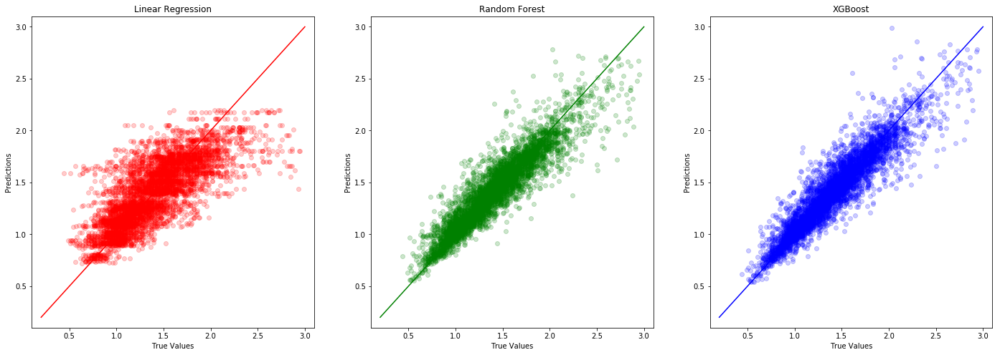
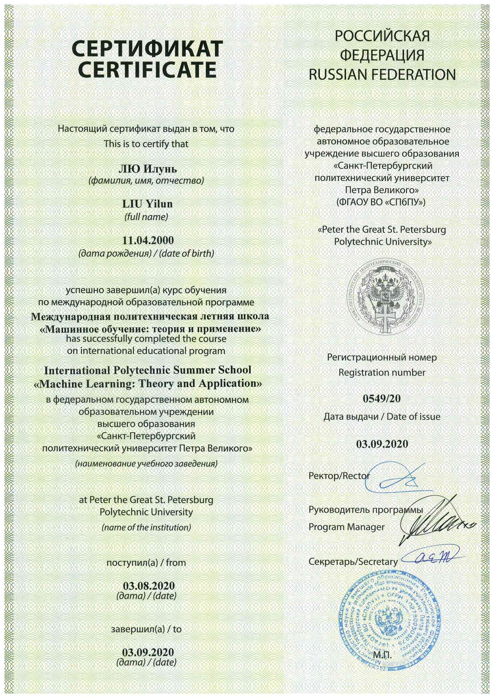
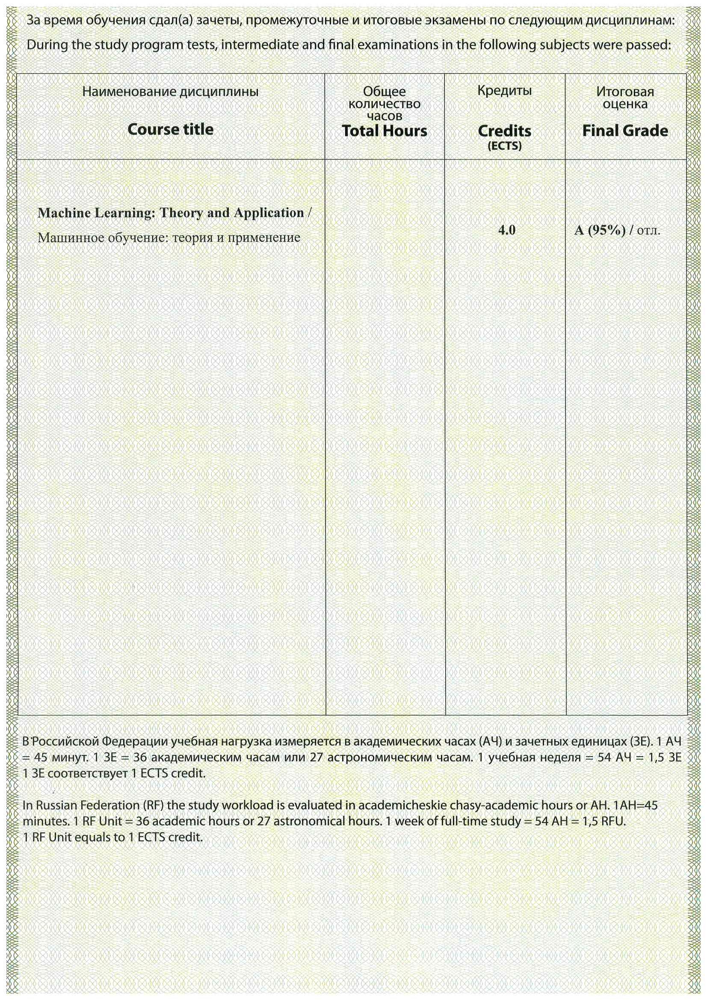

International Polytechnic Summer School: Machine Learning – Theory and Application
This summer school course introduced the theoretical foundations of machine learning and data science, as well as to the solution of real business problems with the help of computer vision, classification and regression algorithms. The following topics were covered:
- Introduction to Artificial intelligence and Machine Learning
- History rewiew and state of the art
- Supervised & unsupervised learning
- Overfitting & underfitting
- Regularization in ML
- Model validation techniques
- Data processing techniques
- Machine learning application workflow
- Hyperparameters tuning tactiques
- Binary classification and logistic regression
- Shallow & Deep Neural networks
- Convolutional Neural Networks
- Deep Sequential Neural Networks
In the final project, we conducted studies on regression predictions with a variety of machine learning methodologies.

Performance comparison of Linear Regression, Random Forest, and XGBoost for broccoli price prediction


Certificate of Completion for the SPbSTU International Polytechnic Summer School